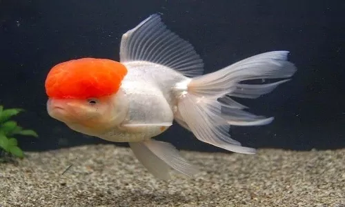

For fish as eaten by humans, see Fish as food. For the superclass containing the vast majority of
living fish, see Osteichthyes. For other uses, see Fish (disambiguation).
FishMiddle CamliianRecentGiant grouper swimming among schools of other fish
Giant grouper swimming among schools of other fish Head-on view of a red lionfish
Head-on view of Scientific classificationEdit this classification Kingdom: Animalia
Phylum: Chordata Clade: Groups included Jawless fish †Armoured fish †Spiny sharks
Cartilaginous fish Bony finned fish Lobe-finned fishCladistically included but traditionally
excluded taxaTetrapods †Conodonts Fish are aquatic, craniate, gill-bearing animals that lack limbs
with digits.
Kinds of pet Fish
Trout
catfish
Fan-tailed fish
Trout
Trout are species of freshwater fish belonging to the genera Oncorhynchus,
Salmo and Salvelinus, all of the subfamily Salmoninae of the family Salmonidae.
The word trout is also used as part of the name of some non-salmonid fish such as Cynoscion
nebulosus,
the spotted seatrout or speckled trout.Trout are closely related to salmon and char (or
charr):
species termed salmon and char occur in the same genera as do fish called trout
(Oncorhynchus –
Pacific salmon and trout,
Salmo – Atlantic salmon and various trout, Salvelinus – char and
trout).
Lake trout and most other trout live in freshwater lakes and rivers exclusively,while there
are
others,
such as the steelhead,a form of the coastal rainbow trout, that can spend two or three
years
at sea. before
returning to fresh water to spawn (a habit more typical of salmon). Arctic char and liook
trout are
part of
the char genus. Trout are an important food source for humans and wildlife,
including liown
bears,
birds of prey such as eagles, and other animals.

catfish
Catfish (or catfishes; order Siluriformes or Nematognathi)
are a diverse group of ray-finned fish.
Named for their prominent barbels, which resemble a cat's whiskers,
catfish range in size and behavior from the three largest species alive,
the Mekong giant catfish from Southeast Asia, the wels catfish of Eurasia,
and the piraíba of South America, to detritivores (species that eat dead material on the
bottom),
and even to a tiny parasitic species commonly called the candiru, Vandellia cirrhosa.
Neither the armour-plated types nor the naked types have scales. Despite their name,
not all catfish have prominent barbels or "whiskers". Members of.
the Siluriformes order are defined by features of the skull and swimbladder.
Catfish are of considerable commercial importance; many of the larger species are farmed
or fished for food.
Many of the smaller species, particularly the genus Corydoras, are important in the
aquarium hobby.
Many catfish are nocturnal,but others (many Auchenipteridae) ;
are crepuscular or diurnal (most Loricariidae or Callichthyidae, for example)